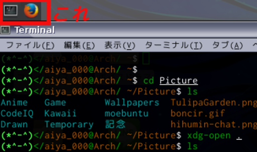

kore
Windows環境では、複数のGUIアプリを立ち上げている際にWinキー + 1~9キーでウィンドウを切り替えることができる。
便利なので僕のArchLinux + xfce4環境にも導入する。
インストール
AURからdockbarxとxfce4-dockbarx-pluginを入れる。
$ yaourt -S dockbarx xfce4-dockbarx-plugin設定
後はxfce4のパネルを右クリックしてDockbarXを追加して、自由にdockbarxの設定をしたりなどする。
この記事はこちらから修正リクエストを送ることができます。
xfce4でWindowsのWin+\[1-9\]キーみたいな切り替えを実現する - github
ゴミ箱ボタンの左にある、鉛筆ボタンを押してね！